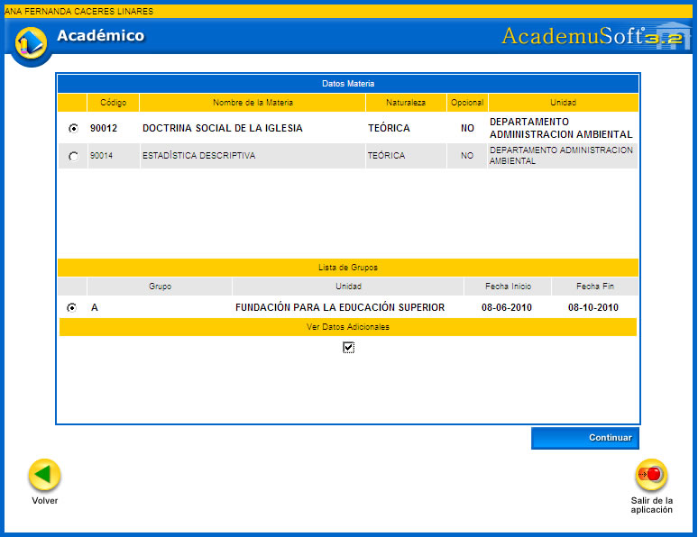
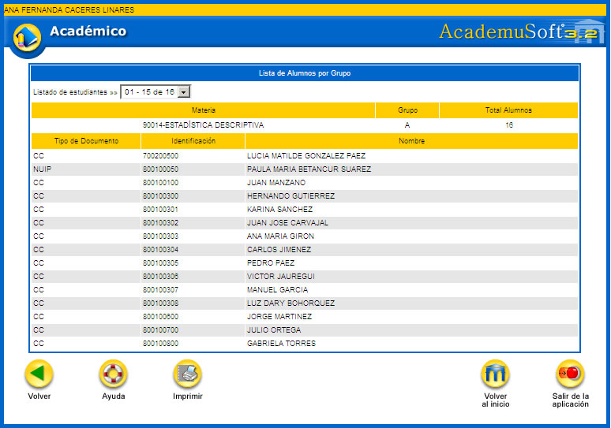
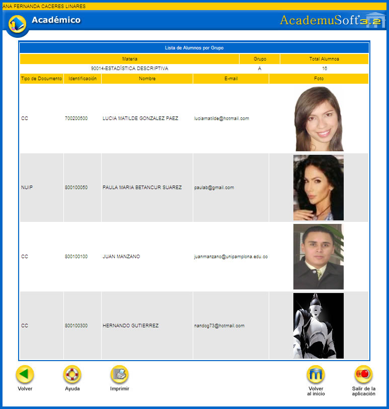
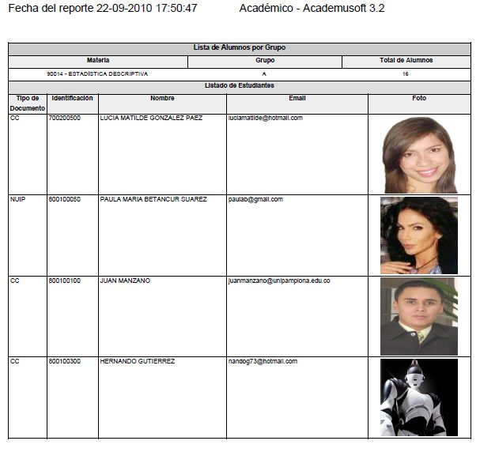
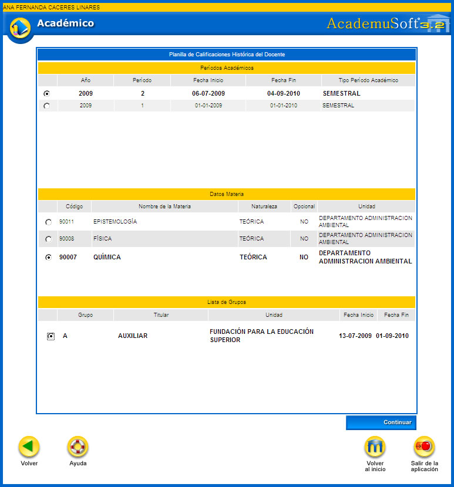
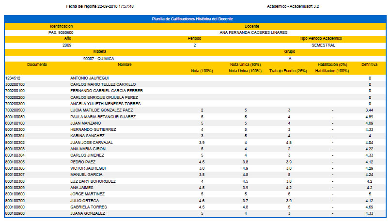

6. LISTADO DE ESTUDIANTES POR GRUPO
Esta funcionalidad permite que el docente previsualice un listado de alumnos por grupo asignado. Se puede chequear la opción: Ver datos adicionales, para mostrar las fotos y el correo de los mismos. Luego se debe dar clic sobre la opción Continuar.

Si no se chequea el parámetro de VER DATOS ADICIONALES, el sistema muestra: nombre de materia, grupo y total de alumnos, el listado general que incluye tipo de documento y la identificación. Cuenta con la opción Imprimir.

Si se chequea el parámetro de VER DATOS ADICIONALES, el sistema muestra: nombre de materia, grupo y total de alumnos, el listado completo que incluye tipo de documento, identificación, e-mail y la fotografía. Cuenta con la opción Imprimir.

Opción Imprimir: permite generar un reporte del listado de los estudiantes en formato PDF, tal como se muestra en el siguiente ejemplo:

7. CALIFICACIONES HISTÓRICAS POR DOCENTE
Funcionalidad que muestra al docente las calificaciones que ha gestionado durante todas las contrataciones laborales que ha tenido con la institución, distribuida por periodo académico. El sistema muestra los periodos académicos en los que ha estado vinculado el docente. Se puede elegir un periodo académico, luego el sistema lista las asignaturas y enseguida aparecen los grupos. Se elige cada uno de los registros de su interés y luego se da clic sobre la opción Continuar.

El sistema despliega el listado de estudiantes que cursaron la asignatura y las calificaciones obtenidas, de acuerdo al sistema de evaluación asignado a la misma. Dispone de la opción Imprimir.

Opción Imprimir: permite generar un reporte del listado de los estudiantes matriculados en periodos anteriores, se encuentra en formato PDF, tal como se muestra en el siguiente ejemplo:
